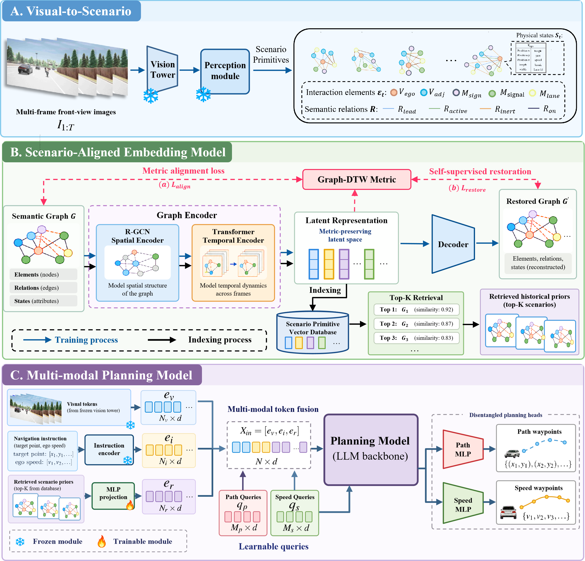
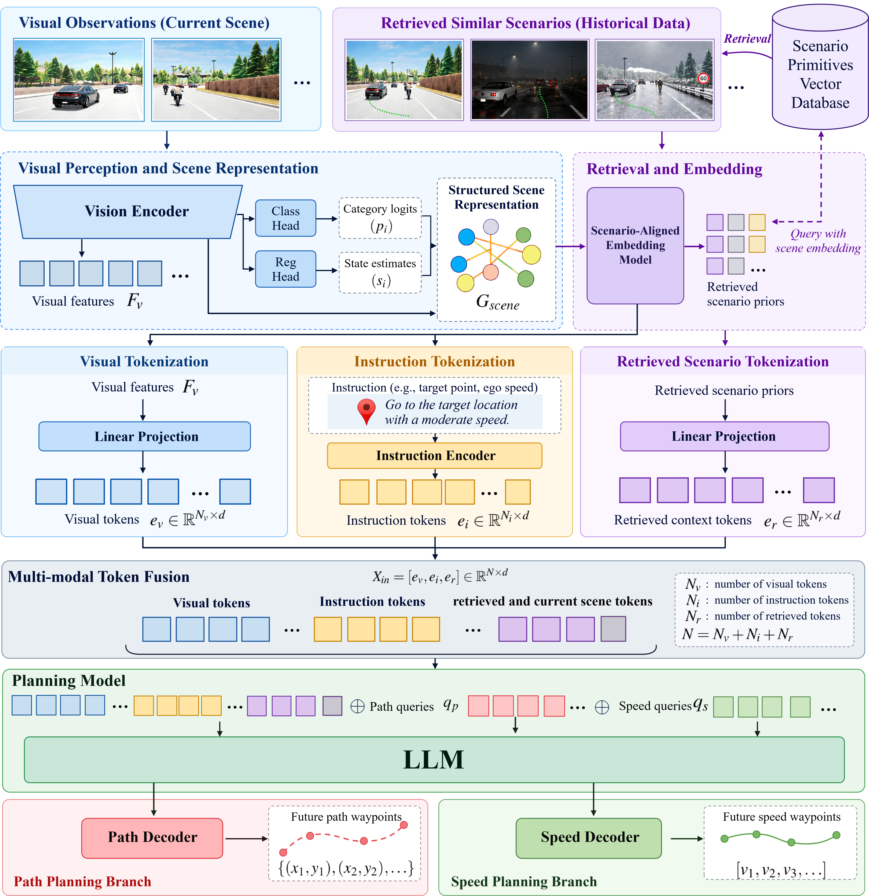
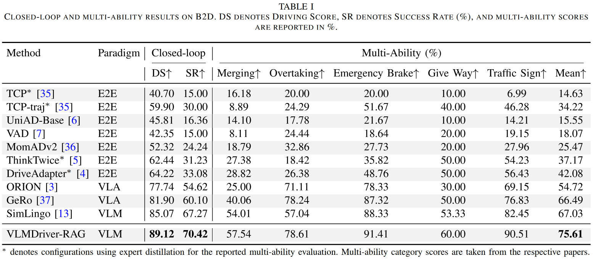
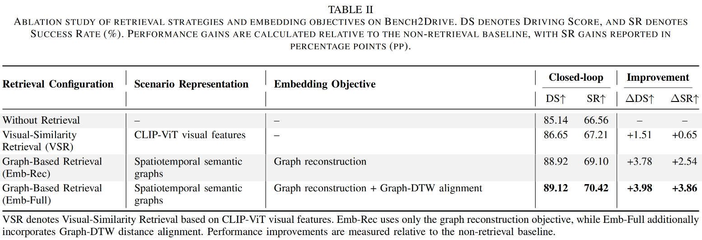
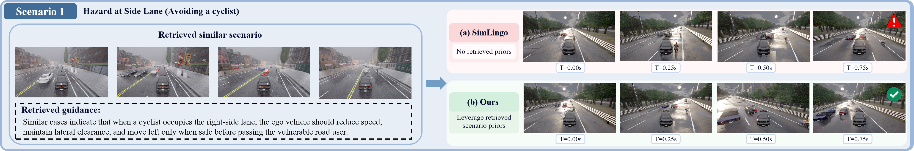
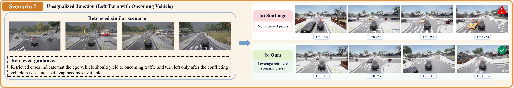
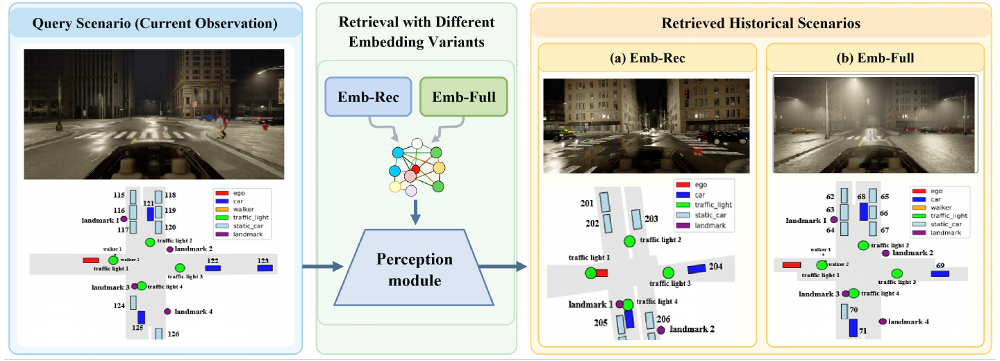
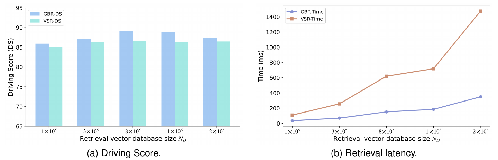

VLMDriver-RAG: Retrieval-Augmented Vision-Language-Model for Autonomous Driving
*Corresponding author: Fei Gao.
Overview

Architecture

Visual-to-Scenario constructs ego-centric semantic graphs of entities, physical states, and typed relations. Online graphs integrate object-level perception predictions with available scene-state information.
Scenario-Aligned Embedding uses an RGCN and temporal Transformer to encode graph sequences. Joint graph reconstruction and Graph-DTW distance alignment support retrieval of historical scenarios with similar spatiotemporal interaction patterns.
The Retrieval-Augmented VLM Backbone fuses visual tokens, navigation and ego-speed instructions, and retrieved context together with the current-scene graph. Separate path and speed queries generate planning outputs.
Quantitative Results
We evaluate VLMDriver-RAG on 220 Bench2Drive routes after training on 10,000 sampled driving segments, and analyze retrieval design, graph priors, training strategy, and database scale. In addition to quantitative comparisons, we also provide qualitative visualizations to illustrate the practical advantages of retrieval-augmented planning in challenging driving scenarios.




In the Hazard at Side Lane scenario, retrieved cases guide the ego vehicle to reduce speed, maintain clearance, and move left only when safe before passing a cyclist. The figure compares (a) SimLingo with (b) VLMDriver-RAG.

At an Unsignalized Junction, retrieved cases guide yielding to oncoming traffic and turning left after the conflicting vehicle passes and a safe gap becomes available. The figure compares (a) SimLingo with (b) VLMDriver-RAG.

For the same query, Emb-Rec and Emb-Full retrieve different historical scenarios. Adding Graph-DTW alignment to graph reconstruction improves DS by 0.20 points and SR by 1.32 percentage points, supporting retrieval based on interaction patterns.

Graph-based retrieval (GBR) achieves higher Driving Scores than visual-similarity retrieval (VSR) across the evaluated database sizes, with its highest DS at 800,000 primitives. At the largest database size (2,000,000), GBR takes 348.30 ms versus 1473.94 ms for VSR, a 4.23× speedup. Speedups range from 3.13× to 4.23× across all evaluated scales. Increasing database size beyond 800,000 does not further improve DS in this experiment.
Citation
This citation refers to the revised manuscript supplied with this repository.
@misc{zhao2026vlmdriverrag,
title={VLMDriver-RAG: Retrieval-Augmented Vision-Language-Model for Autonomous Driving},
author={Rui Zhao and Haofeng Hu and Zhenhai Gao and Jiaqiao Liu and Fei Gao},
year={2026},
note={Revised manuscript},
url={https://github.com/InfiniDrive/VLMDriver-RAG}
}